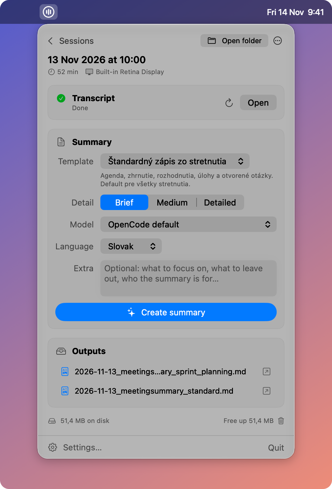
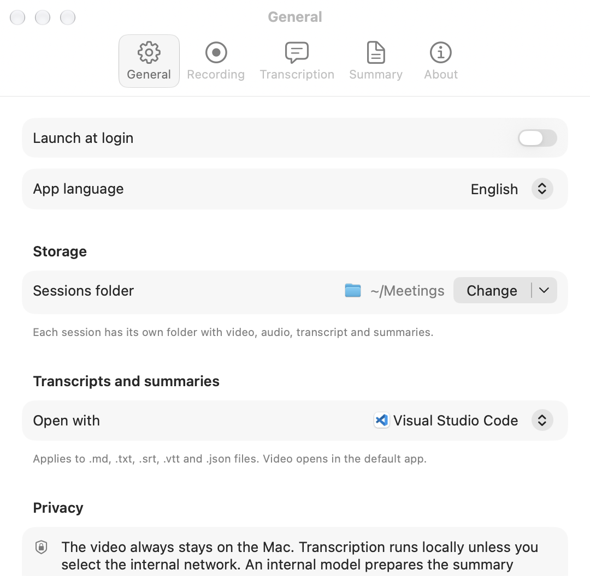
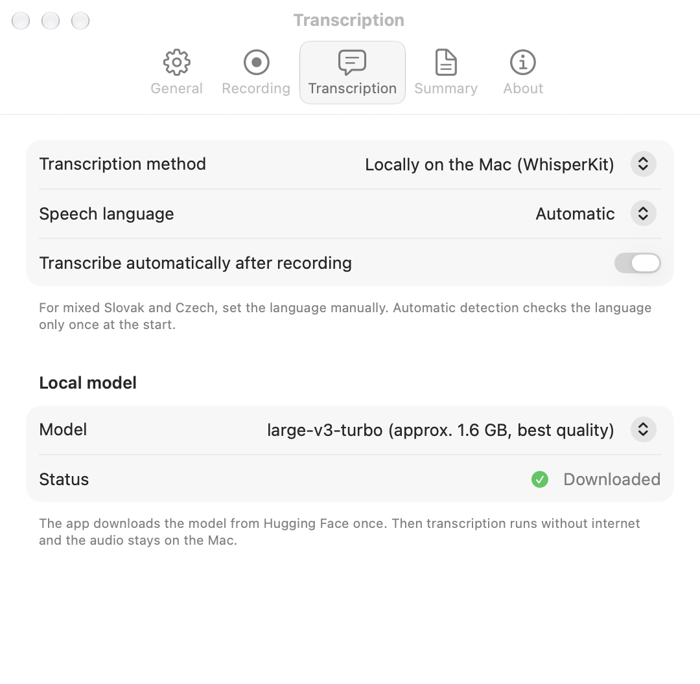

One click in the menu bar.
Click the Minutes icon. Select a screen and the audio sources. Then click Start recording.
- System audio records the other participants from Teams, Meet or Zoom.
- Microphone records you. In the transcript you are “me”, the others are “others”.
- During the recording you see the audio level. You can mute each source.
Before you record, tell the participants that you record the meeting. Use headphones, or the microphone also picks up the speakers.

The transcript is made on your local machine.
When you stop the recording, the transcription starts by itself. A local model transcribes each audio track separately and adds time stamps. It handles Slovak, Czech, English and a mix of them.
While it runs, the ring of the menu bar icon fills. You can use your Mac as usual. The transcript is saved as Markdown, TXT, SRT, VTT and JSON.
Minutes from a template, not from the model's mood.
In the session detail, select a template, a detail level, a model and a language. In Extra, write what to focus on. Click Create summary.
Templates are Markdown files: standard minutes, your own templates (for example your company's format) or a one-off instruction. When the model needs to see the screen, it cuts a frame from the video at that time.
Each summary is a new file in the session folder. The old one stays.

Every meeting has its own folder.
The Sessions tab lists your recordings by day. The session name is the topic from the minutes. Search by topic, date or screen.
Free up space deletes video, audio and frames. The transcript and minutes stay. Delete session moves the folder to the Trash.
~/Meetings/2026-11-13_12-31-25/ ├── recording.mov · audio/ · frames/ ├── 2026-11-13_12-31-25_transcript.md └── outputs/2026-11-13_meetingsummary_<topic>.md

What stays on your local machine, and what does not.
and selected frames
The video never leaves your local machine. The audio goes to a transcription server only if you select one in Settings → Transcription. With a local model in OpenCode, nothing leaves your local machine. The app sends no telemetry.
The icon tells you what is going on.
- ReadyWaits for your next meeting.
- RecordingRed dot and the meeting time.
- TranscribingThe ring fills as the transcript grows.
- Writing minutesThe arc spins while the model writes.
- Minutes readyA dot waits until you open the popover.
- Starting or savingThe arc spins for a moment.
Sensible defaults. You can change everything.
App language (English or Slovak), sessions folder, video quality, transcription model, default template and model for minutes.




Five steps to your first minutes.
- Open
Minutes-1.0.0.dmgand move Minutes to Applications. - Open Minutes. The icon appears in the menu bar.
- Click the icon and then Allow. Allow Minutes in System Settings → Privacy & Security → Screen & System Audio Recording. Restart the app.
- In Settings → Transcription, click Download model. It downloads once.
- Install OpenCode and set up a model: a local one (for example Ollama), your company server or a cloud provider:
brew install opencode ffmpeg
| Mac | Apple Silicon (M1 or later) |
|---|---|
| System | macOS 15 Sequoia or later |
| Space | about 3 GB plus recordings |
| Network | none for local models; else what your model needs |
| Tools | OpenCode; optionally Claude Code, Codex and ffmpeg |
Frequently asked questions
Does it work without internet?
Recording and local transcription do. Minutes work offline too, with a local model in OpenCode (for example Ollama).
How do I switch the app to Slovak?
Settings → General → App language → Slovenčina. Then click Restart now.
How do I add my own template?
Copy standard.md and change id, the name and the instruction. Save it in the templates folder from Settings → Summary.
The transcript is in the wrong language.
In Settings → Transcription, set the speech language manually and transcribe again.
How do I free up disk space?
In the session detail, click Free up. The app can also delete old videos by itself (Settings → Recording).
The app says it has no permission to record the screen.
Allow Minutes in System Settings → Privacy & Security → Screen & System Audio Recording, then restart the app.
Minutes 1.0.0
- decision
- Minutes takes the minutes. The data stays on your local machine.
- task
- Install Minutes – you – before your next meeting.
- open
- Which template do you use first?